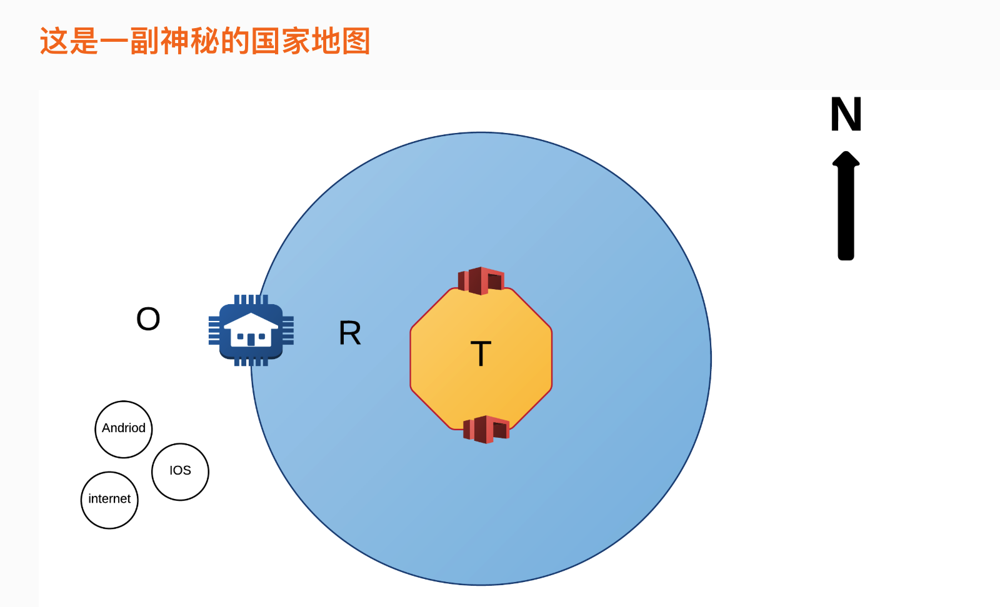
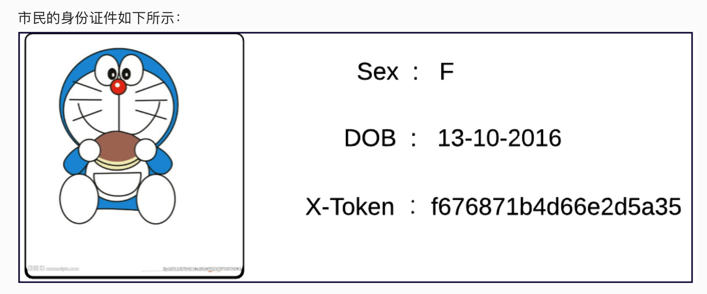
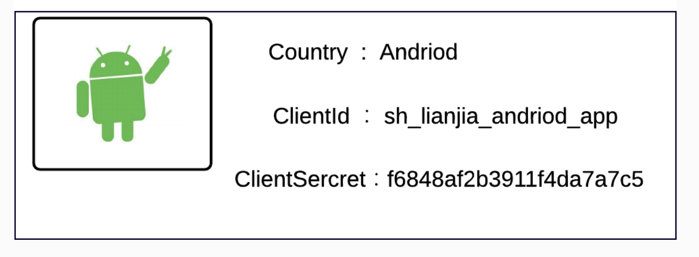

<!DOCTYPE html>
<html>
<head><meta name="generator" content="Hexo 3.8.0">
  <meta charset="utf-8">
  
  <title>network 网关 | summer</title>
  <meta name="viewport" content="width=device-width, initial-scale=1, maximum-scale=1">
  <meta name="description" content="大家都知道从一个房间走进另一个房间需要经过一扇门，同样从一个网络向另一个网络发送信息，也必须经过一道“关口”，这道关口就是网关。顾名思义，网关(Gateway)就是一个网络连接到另一个网络的“关口”。">
<meta property="og:type" content="article">
<meta property="og:title" content="network 网关">
<meta property="og:url" content="http://yoursite.com/2019/05/07/network/index.html">
<meta property="og:site_name" content="summer">
<meta property="og:description" content="大家都知道从一个房间走进另一个房间需要经过一扇门，同样从一个网络向另一个网络发送信息，也必须经过一道“关口”，这道关口就是网关。顾名思义，网关(Gateway)就是一个网络连接到另一个网络的“关口”。">
<meta property="og:locale" content="zh-CN">
<meta property="og:image" content="http://yoursite.com/2019/05/07/network/images/network.png">
<meta property="og:image" content="http://yoursite.com/2019/05/07/network/images/card.png">
<meta property="og:image" content="http://yoursite.com/2019/05/07/network/images/Id.png">
<meta property="og:updated_time" content="2019-05-07T08:14:48.458Z">
<meta name="twitter:card" content="summary">
<meta name="twitter:title" content="network 网关">
<meta name="twitter:description" content="大家都知道从一个房间走进另一个房间需要经过一扇门，同样从一个网络向另一个网络发送信息，也必须经过一道“关口”，这道关口就是网关。顾名思义，网关(Gateway)就是一个网络连接到另一个网络的“关口”。">
<meta name="twitter:image" content="http://yoursite.com/2019/05/07/network/images/network.png">
  
    <link rel="alternate" href="/atom.xml" title="summer" type="application/atom+xml">
  
  
    <link rel="icon" href="/favicon.png">
  
  
    <link href="//fonts.googleapis.com/css?family=Source+Code+Pro" rel="stylesheet" type="text/css">
  
  <link rel="stylesheet" href="/css/style.css">
  <link rel="stylesheet" href="/plugin/bganimation/bg.css">
  

</head>
</html>
<body>
  <div id="container">
    <div id="wrap">
      <div class="outer">
        <div class="widget-wrap mobile-header">
  <h3 class="widget-title"></h3>
  <div class="widget">
    
    <h2 class="author">summer</h2>
    <h3 class="description"></h3>
    <div class="count-box">
      <a href="/archives"><div><strong>10</strong><br>文章</div></a>
      <a href="/categories"><div><strong>0</strong><br>分类</div></a>
      <a href="/tags"><div><strong>6</strong><br>标签</div></a>
    </div>
    <ul class="blog-link">
     
          <a href="/" title="Home">
            <li>主页</li>
          </a>
        
          <a href="/archives" title="Archives">
            <li>归档</li>
          </a>
        
          <a href="/categories" title="Categories">
            <li>分类</li>
          </a>
        
          <a href="/tags" title="Tags">
            <li>标签</li>
          </a>
        
    </ul>
  </div>
</div>

        <section id="main"><article id="post-network" class="wow slideInRight article article-type-post" itemscope itemprop="blogPost">
  <div class="article-meta">
    <a href="/2019/05/07/network/" class="article-date">
  <time class="post-time" datetime="2019-05-07T07:52:42.000Z" itemprop="datePublished">
    <span class="post-month">5月</span><br>
    <span class="post-day">07</span>
  </time>
</a>
   
  </div>
  <div class="article-inner">
    
    
      <header class="article-header">
        
  
    <h1 class="article-title" itemprop="name">
      network 网关
    </h1>
  

        <div>
          
          
              

          
        </div>
      </header>
    
    <div class="article-entry" itemprop="articleBody">
      
        <p>大家都知道从一个房间走进另一个房间需要经过一扇门，同样从一个网络向另一个网络发送信息，也必须经过一道“关口”，这道关口就是网关。顾名思义，网关(Gateway)就是一个网络连接到另一个网络的“关口”。<br><a id="more"></a></p>
<p></p>
<p>苍梧国居民总体分为两类：天龙人和普通市民。</p>
<p>黄色区域，统称为区域T，学术名称： Trusted Zone，居住着特权阶级：天龙人，他们垄断着宇宙的知识，个体可浏览任何知识，信息对其是透明、自由的。</p>
<p>蓝色区域，统称为区域R，学术名称：Restricted Zone，居住着普通市民，市民有自己的身份证，受法律约束。</p>
<p>市民只能通过红色的门，俗称龙门，去区域T查询公共资料（可公开访问的接口），但是某些会危及统治的资料（授权接口），市民必须实名浏览，以便监控。</p>
<p></p>
<p>白色区域，统称为区域O，学术名称： Overseas Zone，为他国的领土。<br>区域O的他国公民，必须先申请护照，然后办理签证，才能访问苍梧国。</p>
<p>颁发护照的机构，称为出入境管理中心，即地图中区域O和R交界处的房型Icon。</p>
<p>苍梧国的护照如下所示：</p>
<p></p>
<p>Trusted Zone<br>我们的机房局域网，机房内的所有服务默认是受信任的，服务之间可以任意访问彼此的数据。 通常情况下，服务之间通过SPI互相访问。</p>
<p>机房服务器所在网段和其他网络隔离。</p>
<p>Restricted Zone<br>受限制区域，包括门店电脑，总部电脑、员工等，是除了机房服务器之外的整个局域网设备。</p>
<p>龙门<br>API网关（<a href="http://aroute.dooioo.com)，Restricted" target="_blank" rel="noopener">http://aroute.dooioo.com)，Restricted</a> Zone的客户端必须通过API网关访问机房的服务。</p>
<p>API网关也可以称作接入层。</p>
<p>Overseas Zone<br>外国领土，海外华人华侨，包括Andriod App、IOS App、定制机、外网（公网）产品比如链家网、境外恶势力。</p>
<p>出入境管理中心<br>OAuth服务（<a href="https://oroute.dooioo.com)，Overseas" target="_blank" rel="noopener">https://oroute.dooioo.com)，Overseas</a> Zone的客户端 必须通过OAuth服务申请护照（登记），办理签证（申请AccessToken)，之后才能访问苍梧国。</p>

      
    </div>
    <footer class="article-footer">
      <a data-url="http://yoursite.com/2019/05/07/network/" data-id="cjvdiqf1u000bnjlqqe7hspak" class="article-share-link">分享</a>
      
      
    </footer>
  </div>
  
    
<nav id="article-nav">
  
  
    <a href="/2019/04/26/cash/" id="article-nav-older" class="article-nav-link-wrap">
      <strong class="article-nav-caption">下一篇</strong>
      <div class="article-nav-title">前端缓存</div>
    </a>
  
</nav>

  
</article>


</section>
        
          <aside id="sidebar">
  
    <div class="widget-wrap">
  <h3 class="widget-title"></h3>
  <div class="widget">
    <h1 class="blog-title">summer</h1>
    <h2 class="blog-subtitle"></h2>
    <ul class="blog-link">
     
          <a href="/" title="Home">
            <li>主页</li>
          </a>
        
          <a href="/archives" title="Archives">
            <li>归档</li>
          </a>
        
          <a href="/categories" title="Categories">
            <li>分类</li>
          </a>
        
          <a href="/tags" title="Tags">
            <li>标签</li>
          </a>
        
    </ul>
  </div>
</div>

  
    <div class="widget-wrap">
  <h3 class="widget-title"></h3>
  <div class="widget">
    
    <h2 class="author">summer</h2>
    <h3 class="description"></h3>
    <div class="count-box">
      <a href="/archives"><div><strong>10</strong><br>文章</div></a>
      <a href="/categories"><div><strong>0</strong><br>分类</div></a>
      <a href="/tags"><div><strong>6</strong><br>标签</div></a>
    </div>


    <div class="social-link">
      
        <a class="hvr-bounce-in" href="http://github.com/ShanaMaid" target="_blank" title="Github">
          Github
        </a>
      
    </div>

    <div class="friend-link">
      <h2>友情链接</h2>
      
        <a class="hvr-bounce-in" href="http://blog.shanamaid.top/" target="_blank" title="ShanaMaid">
          ShanaMaid
        </a>
      
    </div>
  </div>
</div>

  
</aside>
        
      </div>
      <footer id="footer">
  
  <div class="outer">
    <div id="footer-info" class="inner">
      &copy;2018 - 2019 summer<br>
      由<a href="http://hexo.io/" target="_blank">Hexo</a>强力驱动 | 
      主题-<a href="https://github.com/ShanaMaid/hexo-theme-shana">Shana</a>
      
    </div>
    
  </div>
</footer>
    </div>
    

<script src="//apps.bdimg.com/libs/jquery/2.1.4/jquery.min.js"></script>
<script src="//apps.bdimg.com/libs/wow/0.1.6/wow.min.js"></script>
<script>
new WOW().init();
</script>   


  <link rel="stylesheet" href="/plugin/fancybox/jquery.fancybox.css">
  <script src="/plugin/fancybox/jquery.fancybox.pack.js"></script>


  <link rel="stylesheet" href="/plugin/galmenu/GalMenu.css">
  <script src="/plugin/galmenu/GalMenu.js"></script>
  <div class="GalMenu GalDropDown">
      <div class="circle" id="gal">
        <div class="ring">
          
            <a href="/" title class="menuItem">首页</a>
          
            <a href="/tags" title class="menuItem">标签</a>
          
            <a href="/categories" title class="menuItem">分类</a>
          
            <a href="/archives" title class="menuItem">归档</a>
          
            <a href="/xxxxxxxxx" title class="menuItem">xxx</a>
          
            <a href="/xxxxxxx" title class="menuItem">xxxx</a>
          
        </div>
        
          <audio id="audio" src="#"></audio>
        
      </div> 
</div>
<div id="overlay" style="opacity: 1; cursor: pointer;"></div>
  <script type="text/javascript">var items = document.querySelectorAll('.menuItem');
    for (var i = 0,
    l = items.length; i < l; i++) {
      items[i].style.left = (50 - 35 * Math.cos( - 0.5 * Math.PI - 2 * (1 / l) * i * Math.PI)).toFixed(4) + "%";
      items[i].style.top = (50 + 35 * Math.sin( - 0.5 * Math.PI - 2 * (1 / l) * i * Math.PI)).toFixed(4) + "%"
    }</script>
<script type="text/javascript">
  $(document).ready(function() {
    $('body').GalMenu({
      'menu': 'GalDropDown'
    })
  });
</script>

  <section class="hidden-xs"> 
  <ul class="cb-slideshow"> 
    <li><span>苟利</span></li> 
    <li><span>国家</span></li> 
    <li><span>生死以</span></li> 
    <li><span>岂能</span></li> 
    <li><span>祸福</span></li> 
    <li><span>趋避之</span></li> 
  </ul>
</section>
<script src="/js/script.js"></script>


  </div>
</body>
</html>